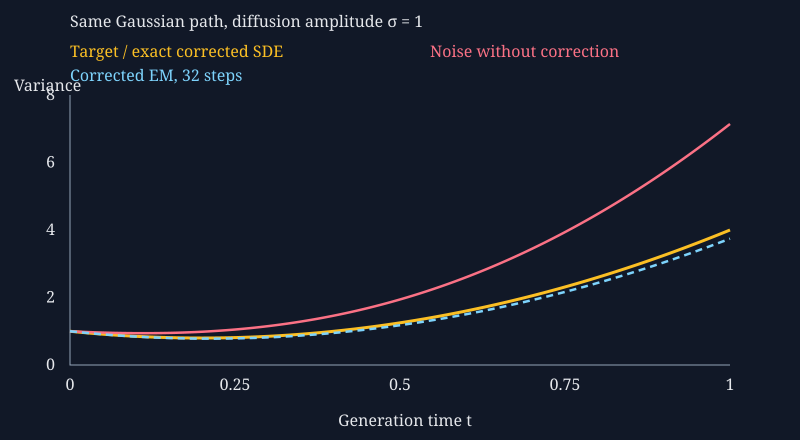

3. Scores, denoising, and stochastic sampling
Score functions and score matching · MIT 6.S184 Lecture 3-A, 2026 · Independent study edition
The recording determines the order: score functions, denoising regression, then stochastic sampling and its proof. Mathematical assumptions, the Gaussian audit, and worked problems are independent expansions. The corresponding official material is Holderrieth and Erives, Sections 4.1–4.3.
3.1 A score describes local density change 02:28
A flow sampler can reach the correct distribution while producing a deterministic trajectory once its initial draw is fixed. Suppose we want additional random choices during generation, while preserving the distribution at every time. Adding Gaussian noise to each numerical step is easy, but it spreads probability and generally changes the answer. The missing ingredient is a field that compensates for this spreading. A score supplies the local density information needed to construct that compensation.
Continue Chapter 2's scalar bridge. Let the clean endpoint $Z$ have law $\mathcal N(2,4)$, let $\varepsilon\sim\mathcal N(0,1)$ independently, and set $X_t=tZ+(1-t)\varepsilon$ for generation time $t\in[0,1]$. The notation $\mathcal N(m,v)$ uses variance as its second argument. Its marginal mean and variance are $m_t=2t$ and $v_t=4t^2+(1-t)^2$. Thus $X_0$ is standard Gaussian noise and $X_1$ has the target law. This bridge has the same endpoints as Chapter 1's expanding flow but a different intermediate probability path. Here and below, time, state, and their numerical scales are dimensionless teaching quantities.
Let $p_t(x)$ be a differentiable density on the state space $\mathbb R^d$. At a point where $p_t(x)\gt0$, define its score by $s_t(x)=\nabla_x\log p_t(x)$. The gradient $\nabla_x$ differentiates with respect to the state coordinates, not model parameters. This spatial score differs from the parameter derivative called a score in classical statistical estimation. It has inverse-state units if the state has physical units, and it is undefined where the density vanishes.
For a unit vector $a$, a small positive displacement $h$ changes the log density by $h\,s_t(x)\cdot a+o(h)$. The dot denotes the Euclidean inner product, and $o(h)/h\to0$. Cauchy–Schwarz gives $s_t(x)\cdot a\le\|s_t(x)\|$, with equality at $a=s_t(x)/\|s_t(x)\|$ when the score is nonzero. The score therefore points in the direction of steepest local log-density increase. Its magnitude is not fixed to one, and a zero score identifies a stationary point rather than necessarily a maximum.
The scalar Gaussian example makes the derivative explicit. Its log density is $-\log(2\pi v_t)/2-(x-m_t)^2/(2v_t)$. Differentiating only with respect to $x$ gives
The denominator never vanishes: completing the square gives $v_t=5(t-1/5)^2+4/5$. The score points toward the moving mean. At time one half, $m_t=1$ and $v_t=1.25$, so a state below one has positive score and a state above one has negative score. This marginal score is regular even at time one, although a conditional training target introduced below becomes singular there.
Scores also avoid an unknown normalization constant. If $p(x)=r(x)/K$ for a positive differentiable function $r$ and a finite positive constant $K=\int r(x)\,dx$, then $\nabla\log p=\nabla\log r$ because $K$ does not depend on $x$. That algebra explains why learning or using a score can be easier than evaluating a normalized density. It does not make arbitrary score estimation from data trivial. The distinction between explicit and denoising score matching is developed in Vincent's accepted preprint, Sections 3–4.
There is a corresponding limit on what the score determines. Suppose two positive differentiable densities $p$ and $q$ have the same score throughout a connected open region $\Omega$. Then $\nabla\log(p/q)=0$. Integrating this zero gradient along a path inside $\Omega$ shows that $\log(p/q)$ is constant there, so $p=Cq$ for some constant $C\gt0$. If both densities have their entire mass in that one region, normalization fixes $C=1$. On disconnected positive-density regions, however, the constants can differ by component. Local gradients alone do not recover the relative mass assigned to disconnected pieces of support.
A learned vector field also need not be the exact score of any density. For a positive twice continuously differentiable density, mixed partial derivatives commute, giving $\partial_{x_i}s_j=\partial_{x_j}s_i$. An arbitrary network output can violate this condition in dimensions above one. Squared-error score training seeks a vector-field approximation; it does not automatically enforce every structural property of an exact density gradient. The marginal-preserving SDE result below uses the true score. Applying it with an approximation requires a separate error analysis.
3.2 The marginal score averages conditional scores under the posterior 04:01
Training can access a clean example $Z$ and a known corruption mechanism, even when the marginal density of corrupted data is intractable. Write the corruption density as $q_t(x\mid z)$ and the clean-data law as $P_{\mathrm{data}}$. The marginal density is $p_t(x)=\int q_t(x\mid z)P_{\mathrm{data}}(dz)$. This measure notation allows discrete or continuous clean data. The conditional score is $c_t(x,z)=\nabla_x\log q_t(x\mid z)$ where the conditional density is positive.
Proposition 3.1 — conditional-score identity. Fix an interior time $t$. Suppose $q_t(x\mid z)$ is differentiable and positive in a neighborhood of the point under consideration. Assume its state derivatives are bounded in that neighborhood by a function integrable under $P_{\mathrm{data}}$, and that $0\lt p_t(x)\lt\infty$. Then
Proof. The domination assumption permits differentiation under the integral. Apply the derivative of the logarithm and multiply each conditional derivative by its density:
The measure $q_t(x\mid z)P_{\mathrm{data}}(dz)/p_t(x)$ integrates to one and is the conditional law of $Z$ given the observed noisy state $x$. The last integral is therefore the claimed posterior expectation. ∎
The weights depend on $x$. Replacing this posterior by the unconditional data law would generally give the wrong field. A noisy state is evidence about which clean examples could have produced it; averaging must account for that evidence. The formula in the course notes, equations (38)–(40) is the density version of this same identity.
For a Gaussian bridge $X_t=\alpha_tZ+\beta_t\varepsilon$ with independent standard Gaussian $\varepsilon$, assume $\beta_t\gt0$. Conditional on $Z=z$, the density is Gaussian with mean $\alpha_tz$ and covariance $\beta_t^2I_d$, where $I_d$ is the identity matrix. Differentiating its quadratic log density gives $c_t(x,z)=-(x-\alpha_tz)/\beta_t^2$. Let $D_t(x)=\mathbb E[Z\mid X_t=x]$ denote the posterior mean, when this expectation exists. Proposition 3.1 gives
The posterior mean is a denoiser in the squared-error sense; it need not itself be a typical clean sample. For two possible clean outputs, an ambiguous observation can produce an average lying between them. A posterior expectation and a random draw from the posterior solve different tasks.
In our scalar running case, $\alpha_t=t$ and $\beta_t=1-t$. Bayes' formula makes the posterior density proportional to $\exp[-(z-2)^2/8-(x-tz)^2/(2\beta_t^2)]$. Completing the square gives posterior precision $1/4+t^2/\beta_t^2$, the reciprocal of its variance. Its linear coefficient is $1/2+tx/\beta_t^2$. Dividing that coefficient by the precision yields
Substitution into the conditional-score average recovers $s_t(x)=-(x-2t)/v_t$. This is an exact check of the identity rather than a claim about a trained network. At fixed interior time, both routes must agree for every state. The chapter program tests several times and states independently of any Monte Carlo draw.
Chapter 2's marginal transport velocity is $u_t(x)=(D_t(x)-x)/(1-t)$. Insert the posterior mean expressed through the score to obtain, for $0\lt t\lt1$,
This conversion uses the specific bridge coefficients. Division by $t$ or $1-t$ prevents blindly applying it at an endpoint, although the marginal Gaussian expressions themselves have finite endpoint limits. For a general Gaussian bridge, the analogous coefficients involve $\alpha_t,\beta_t$ and their derivatives; recovering a score from a velocity additionally requires that the score's coefficient be nonzero. A claim that the two parameterizations are always interchangeable must include those restrictions.
3.3 Denoising score matching is a regression projection 11:34
The marginal score is the regression target we want, but it is unavailable without knowing the data distribution. The conditional score is available: draw a clean example, corrupt it with known noise, and differentiate the known corruption density. Denoising score matching trains on this conditional target. Why should these noisier targets recover the same function?
Fix an interior time and write $C=c_t(X_t,Z)$ and $S=s_t(X_t)$. Assume $\mathbb E[\|C\|^2]\lt\infty$. Proposition 3.1 says $S=\mathbb E[C\mid X_t]$. The conditional mean is square-integrable by the conditional version of Jensen's inequality. Let $f(X_t)$ be any square-integrable candidate vector field. Its conditional-target risk and marginal-score risk are related by the following orthogonal decomposition.
Proposition 3.2 — finite-risk DSM decomposition. Under these assumptions,
Proof. Write $f-C=(f-S)+(S-C)$ and expand the squared norm. The cross term is twice the expectation of $(f-S)\cdot(S-C)$. Conditional on $X_t$, its first factor is fixed, while $\mathbb E[S-C\mid X_t]=0$. The cross term therefore vanishes, leaving the displayed identity. The finite second moments justify all products and expectations. ∎
The last term is independent of the candidate. Among unrestricted measurable square-integrable functions, the minimum occurs at $f(X_t)=S$ almost surely, meaning up to a set of zero probability under the training law. A finite neural-network class can attain only its best approximation; an optimizer need not find even that approximation. Equality of population objectives up to a constant is not a guarantee of exact score recovery from finite data.
For a parameterized score network $s_t^\theta(x)$, define $\theta$ as its trainable parameters and set $f=s_t^\theta$. If differentiating under the expectation is justified, the two finite risks have the same parameter gradient because their difference is constant in $\theta$. The risk identity itself does not require a parameter derivative. This separates the probabilistic regression result from additional assumptions needed to analyze optimization.
Vincent's Section 4.2 and Appendix, PDF pp. 6 and 12–13 establish the denoising versus explicit score-matching equivalence. That accepted preprint is dated December 2010; the journal article appeared in 2011. Our conditional-expectation proof exposes the projection mechanism and the finite-risk requirement directly. The target here is the score of a corrupted-data distribution, rather than an unjustified derivative of a finite atomic empirical law.
3.4 Noise prediction changes the time weighting 18:20
The Gaussian conditional score is especially convenient because training knows the noise draw. At $X_t=\alpha_tZ+\beta_t\varepsilon$, the target becomes $C=-\varepsilon/\beta_t$. Define a noise predictor $\varepsilon_t^\theta(x)=-\beta_ts_t^\theta(x)$. At each fixed time with $\beta_t\gt0$, an exact algebraic identity gives
The sign is consequential: predicting the corruption noise corresponds to the negative scaled score, not the positive one. At fixed time, multiplying a finite objective by $\beta_t^2$ does not change its minimizers. If training averages over multiple times, however, $\beta_t^2$ varies across examples. Noise prediction is then a weighted denoising-score objective, not the removal of a global parameter-independent constant.
To state the time-averaged result, let $T$ be a sampled training time and $w(t)\gt0$ a specified weight on its support. Assume $\mathbb E[w(T)\|C\|^2]\lt\infty$ and the corresponding candidate risk is finite. Condition on both $T$ and $X_T$ in Proposition 3.2, then average. The weighted DSM risk decomposes into the weighted marginal-score risk and a weighted irreducible constant. An unrestricted function of both time and state still has the same pointwise optimum wherever the weight is positive. A network that shares parameters across times can make different approximation compromises under different weights.
There is a concrete boundary in the running Gaussian case. At fixed $t\lt1$, $\mathbb E[C^2]=1/(1-t)^2$ because the standardized noise has variance one. Also $\mathbb E[S^2]=1/v_t$. Applying the projection identity to $f=0$ shows that the irreducible conditional-target risk is
At the exact marginal score, this is the entire DSM loss. It diverges near one even though the marginal score has a finite limit. Since $v_t\ge4/5$, the second term is bounded, whereas the integral of $(1-t)^{-2}$ diverges. Unweighted uniform-time DSM therefore has infinite population risk even at the correct score. Excluding the single endpoint from the sampling support does not cure a divergence in every neighborhood of that endpoint.
Two repairs define different legitimate objectives: truncate the time interval away from one, or choose a weight with sufficient decay. For the noise-prediction weight $w(t)=\beta_t^2=(1-t)^2$, the irreducible risk becomes $1-\beta_t^2/v_t$, bounded between zero and one. At times $0.5$, $0.9$, and $0.99$, the unweighted floors are respectively $3.2$, $99.692308$, and $9999.744930$; their noise-prediction counterparts are $0.8$, $0.996923$, and $0.999974$. These values are calculated by the chapter audit, not measured training losses.
The singularity belongs to the conditional denoising target, not necessarily to the marginal density. For atomic clean data the endpoint law itself may also lack a volume density. That is a separate issue. The course notes, Example 23, PDF p. 32 identify the small-noise difficulty and noise reparameterization; the finite-risk distinction explains why treating time-dependent weights as one constant would be mathematically incorrect.
3.5 A score term compensates for injected noise 20:40
Let $u_t(x)$ denote the transport velocity following a prescribed density path, and let $b_t(x)$ denote an Itô SDE drift. They coincide for a deterministic sampler, but need not coincide when noise is added. Choose a scalar, time-only diffusion amplitude $\sigma_t\ge0$, and consider the candidate drift
Here $W_t$ is standard $d$-dimensional Brownian motion. Its increments have covariance proportional to elapsed time, as in Chapter 1. The added drift points in the direction of increasing density. The factor one half and its positive sign will be justified through probability evolution below. Before making a general claim, we can verify the construction completely for the running Gaussian path.
Write $\dot v_t=dv_t/dt=10t-2$. Substituting the known velocity and score yields an affine drift
The new symbol $A_t$ is the scalar coefficient multiplying the centered state. For continuous bounded $\sigma_t$, this drift is continuous, globally Lipschitz in state uniformly over the unit interval, and of at most linear growth, because $v_t\ge4/5$. The additive SDE construction from Chapter 1 therefore applies. Define the centered process $H_t=X_t-2t$. It satisfies $dH_t=A_tH_tdt+\sigma_tdW_t$.
For completeness, set $F_t=\exp(\int_0^tA_r\,dr)$. The deterministic integrating-factor argument used for the OU process gives $H_t=F_t[H_0+\int_0^tF_r^{-1}\sigma_r\,dW_r]$. With $H_0\sim\mathcal N(0,1)$ independently of the noise, this is a centered Gaussian. Its variance is $V_t=F_t^2[1+\int_0^tF_r^{-2}\sigma_r^2\,dr]$. Differentiation gives $\dot V_t=2A_tV_t+\sigma_t^2$, with $V_0=1$.
Substitute the proposed $V_t=v_t$: the right-hand side becomes $(\dot v_t-\sigma_t^2)+\sigma_t^2=\dot v_t$. Two solutions of this scalar variance equation with the same initial value have a difference satisfying $\dot D_t=2A_tD_t$, $D_0=0$, whose integrating-factor solution is zero. Thus $V_t=v_t$. The mean is $2t$, Gaussianity is established, and every marginal is exactly the desired Gaussian. This proves marginal preservation in this explicit case, including its nonsingular endpoints.
If we instead retain $b=u$, the variance equation gains a positive $\sigma_t^2$ contribution without compensation. For constant amplitude $\sigma$, its exact variance is $v_t[1+\sigma^2 I(t)]$, where $I(t)=\int_0^t v_r^{-1}\,dr$. Indeed, divide its variance equation by $v_t$; the derivative of the ratio is $\sigma^2/v_t$, and the initial ratio is one. Completing the square and integrating gives
The uncorrected endpoint variance is consequently $4+\pi\sigma^2$. With $\sigma=1$, that is $7.141593$ instead of four. The same endpoint mean survives, so a mean-only test misses the error. This failure occurs in exact continuous time and cannot be repaired by reducing the solver step size.
3.6 Fokker–Planck explains the general cancellation 28:59
To follow probability, examine an observable rather than one trajectory. A test function $\varphi\in C_c^\infty(\mathbb R^d)$ is a smooth scalar function vanishing outside a bounded region. Its expectation measures probability through $\mathbb E[\varphi(X_t)]$. Define the Laplacian by $\Delta\varphi=\sum_{i=1}^d\partial_{x_i}^2\varphi$, the sum of its second coordinate derivatives. For a vector field $g$, the divergence is $\nabla\cdot g=\sum_i\partial_{x_i}g_i$.
For the short-time derivation, first assume bounded continuous coefficients, a drift uniformly Lipschitz in state, and an initial state independent of future Brownian increments. These conditions control the increments and make the SDE Markov: conditional on its current state, the future uses fresh Brownian noise and the prescribed coefficients. We identify where extending the calculation to unbounded coefficients needs additional control.
The coefficient one half in diffusion comes from a second-order Taylor term. In one dimension, write $\Delta X=X_{t+h}-X_t$. For continuous time-only $\sigma$ and regular drift, the short-time conditional moments are $\mathbb E[\Delta X\mid X_t=x]=h b_t(x)+o(h)$ and $\mathbb E[(\Delta X)^2\mid X_t=x]=h\sigma_t^2+o(h)$. To check their origin, use the integral SDE. Drift continuity and mean continuity of $X$ give the first relation. Brownian integral variance is $\int_t^{t+h}\sigma_r^2dr=h\sigma_t^2+o(h)$; the squared drift integral is of order $h^2$, and its cross term with noise is of order at most $h^{3/2}$ by Cauchy–Schwarz.
When the coefficients are bounded, the conditional third absolute moment of the increment is of order $h^{3/2}$. The drift integral is bounded by a constant times $h$, and the Gaussian noise integral has this third-moment scaling. Taylor's theorem for $\varphi$ therefore has an expected cubic remainder that becomes zero after division by $h$. Combining its first and second terms gives the local expectation rate $b_t(x)\varphi'(x)+\sigma_t^2\varphi''(x)/2$. For coefficients with growth, these arguments require localization and suitable moment bounds; boundedness must not simply be discarded.
In $d$ dimensions, the noise covariance is $h\sigma_t^2I_d+o(h)$. Contracting this covariance with the Hessian, the matrix of second derivatives, leaves the sum of diagonal entries $\Delta\varphi$. The resulting operator, called the generator, is
Assume the expectation and time-limit interchanges are justified, for example through bounded coefficients and the test-function bounds above. Then $d\mathbb E[\varphi(X_t)]/dt=\mathbb E[\mathcal L_t\varphi(X_t)]$. The corresponding integrated identity over time is the weak forward equation and remains meaningful for probability laws without densities. Under appropriate integrability it is also obtained directly by taking expectations in Itô's formula. The zero-mean stochastic integral contributes no expectation; its quadratic fluctuation produces the Laplacian term.
If the law has a density $p_t$ that is once differentiable in time and twice in space, write both expectations as integrals. Integration by parts moves the drift derivative once and the diffusion derivative twice onto the density. Boundary terms vanish because the test function has compact support. Thus
Equality for all test functions gives the Fokker–Planck equation as a distributional equality. For integrable functions this determines equality almost everywhere; when both sides are continuous, it gives pointwise equality:
This derivation identifies the necessary probability-evolution equation. Using it as a sufficient identification of a prescribed density path also requires that the SDE exist without explosion and that the forward equation have a unique probability-valued solution in the class being considered. We impose those conditions when making the general marginal-preservation statement. They cannot be inferred solely from algebraic cancellation. The affine Gaussian case above avoids this gap by constructing its law explicitly.
Proposition 3.3 — marginal-preserving stochastic correction. Let a positive smooth density path $p_t$ solve the continuity equation $\partial_tp_t=-\nabla\cdot(p_tu_t)$. Let $\sigma_t$ be scalar and time-only. Suppose the SDE with $b_t=u_t+\sigma_t^2s_t/2$ is well posed, the weak-forward-equation identification is valid, and that equation has a unique probability-valued solution with the specified initial law. Then initializing at $p_0$ makes the SDE marginals equal $p_t$.
Proof. Positivity gives $p_ts_t=\nabla p_t$. Since $\sigma_t$ has no state dependence, the Fokker–Planck right-hand side for the candidate path is
The candidate path and the actual SDE laws solve the same forward equation with the same initial law. The assumed uniqueness identifies them. ∎
Equivalently, the probability current is $\mathcal J_t=p_tb_t-\sigma_t^2\nabla p_t/2$. With the corrected drift it equals $p_tu_t$. Diffusion spreads probability down density gradients; the added drift cancels that extra current. Reversing the sign reinforces spreading instead of compensating for it. The time-only scalar assumption matters: a state-dependent diffusion matrix produces additional derivative terms. Song et al., Appendix D.1, PDF p. 17 derives the more general probability-flow relationship.
3.7 Exact marginals do not make finite samplers equivalent 38:25
The corrected SDE family shares one-time distributions in continuous time under the stated conditions. It does not share deterministic trajectories or necessarily share numerical errors. With a uniform step $h=1/N$ and independent standard normal draws $\xi_n$, Euler–Maruyama uses
For the running affine drift, every numerical state is Gaussian. Let $\widehat m_n$ and $\widehat v_n$ denote its mean and variance, and set $A_n=A_{nh}$. Independence of the fresh noise gives exact moment recurrences
Starting from mean zero and variance one, the mean recurrence gives $\widehat m_n=2nh$ exactly by induction. The variance generally has a finite-step bias. With constant $\sigma=1$, the endpoint variance is $3.742856$ at 32 steps, $3.933797$ at 128 steps, and $3.995824$ at 2048 steps. These are exact moments of the discrete recurrence, not estimates from finitely many paths. Refinement approaches four, while the uncorrected process approaches the different limit $4+\pi$.

The following standalone listing checks one corrected recurrence. Its inputs are the step count and constant amplitude; it prints deterministic endpoint moments and has no file, network, or training effects. The complete downloadable program also checks the posterior-score identity, score/velocity conversion, time-dependent loss floors, mixture finite differences, and deliberate wrong-sign probes.
steps, sigma = 128, 1.0
h = 1 / steps
mean, variance = 0.0, 1.0
for n in range(steps):
t = n * h
target = 4 * t**2 + (1 - t)**2
coefficient = (10 * t - 2 - sigma**2) / (2 * target)
mean += h * (2 + coefficient * (mean - 2 * t))
variance = (1 + h * coefficient)**2 * variance + sigma**2 * h
print(f"mean={mean:.6f}, variance={variance:.6f}")
assert abs(mean - 2) < 1e-12
assert abs(variance - 4) < 0.07mean=2.000000, variance=3.933797
Approximate scores introduce another error: replacing $s_t$ by a learned field changes the drift, even before discretization. An amplitude that works well for one finite model and compute budget need not work best for another. The theory does not rank amplitudes by perceptual quality. Moreover, equal marginals do not identify a trajectory law. Chapter 1's static Gaussian process and stationary OU process have identical one-time laws but different increment variances; the same distinction applies to generative ODE and SDE samplers.
A coupled comparison makes the dependence on score error explicit. Let $\widetilde u_t$ and $\widetilde s_t$ approximate the exact fields, and construct $\widetilde b_t=\widetilde u_t+\sigma_t^2\widetilde s_t/2$. Suppose uniform state-and-time bounds are available: $\|\widetilde u_t-u_t\|\le\eta_u$, $\|\widetilde s_t-s_t\|\le\eta_s$, and $\sigma_t\le\sigma_{\max}$. Then
The constants $\eta_u,\eta_s,\eta_b$ bound velocity, score, and drift error, respectively. Drive the exact and approximate SDEs with the same initial state and the same Brownian motion. Since their diffusion amplitudes agree and have no state dependence, subtracting their integral equations cancels the noise. If the exact drift has global Lipschitz constant $L$, the state discrepancy obeys the comparison inequality from Chapter 1. At time one it is at most $\eta_b(e^L-1)/L$ for $L\gt0$, or $\eta_b$ for $L=0$.
This bound is conditional on much stronger control than a small average training loss. Uniform bounds can fail even for a modest error in the slope of a linear score on an unbounded state space. Restricted-domain or mean-square analyses then need their own moment and exit-probability control. The calculation still identifies a mechanism: increasing the diffusion amplitude multiplies a score-field error by its squared amplitude. Exact continuous-time marginal equivalence therefore cannot promise comparable behavior for approximate networks at a fixed numerical budget.
3.8 Langevin dynamics and the direction of time 43:00
A stationary target gives a useful special case. Set $p_t=p$ independent of time and take transport velocity $u=0$. The corrected SDE becomes $dX_t=\sigma^2\nabla\log p(X_t)dt/2+\sigma dW_t$ for constant amplitude. If initialized in $p$, it remains in $p$ under the existence and uniqueness conditions already stated. If $p(x)=\exp[-U(x)]/K$, where $U$ is a dimensionless potential and $K$ its normalizing constant, its score is $-\nabla U$. This yields overdamped Langevin dynamics with drift $-\sigma^2\nabla U/2$.
For $p=\mathcal N(2,4)$, the score is $-(x-2)/4$. The drift is therefore $-\sigma^2(x-2)/8$, an OU process centered at two. When $\sigma\gt0$, its OU invariant variance is $\sigma^2/[2(\sigma^2/8)]=4$. This recovers the target explicitly. Invariance alone does not prove convergence from another initial law. At $\sigma=0$ every trajectory stays where it began, so the target is invariant but no arbitrary initial distribution moves toward it. Multimodal barriers can create additional sampling difficulties even with nonzero noise.
This is an overdamped model of positions. Molecular simulations can also include velocities, geometric constraints, or other dynamics, so the stationary-score construction should not be identified with every molecular simulation algorithm. Its precise contribution here is the relation between a chosen equilibrium density, its spatial gradient, and a compensating drift.
A second connection is a research extension needed to read the diffusion literature without sign errors. Song et al., Section 3.2, PDF p. 4 uses a forward noising clock, increasing from data to noise. Denote that clock by $\tau\in[0,1]$, its state by $Q_\tau$, and its density by $\rho_\tau$. Suppose
where $f_\tau$ is the noising drift, $g_\tau$ a scalar diffusion amplitude, and $B_\tau$ Brownian motion in that clock. The reverse-time theorem cited by Song et al. identifies the process obtained by reversing a suitable diffusion. It is an additional theorem about path laws, not a consequence of equating one-time Fokker–Planck equations alone.
Introduce positive generation time $t=1-\tau$, generated state $X_t=Q_{1-t}$, and density $p_t=\rho_{1-t}$. In this increasing generation clock, the reverse SDE and its associated transport velocity are
Subtracting the second expression from the first gives $b_t=u_t+\sigma_t^2s_t/2$, exactly our correction. Song's probability-flow ODE is stated in Section 4.3, PDF p. 7. Its negative score term in the noising clock becomes a positive term after converting to our generation clock. The reversed Brownian motion is Brownian relative to the reversed information flow; one cannot obtain the reverse SDE by changing the sign of the original drift alone.
If a conditional bridge collapses to atoms at time one, a density score may cease to exist there. Establish the sampler on intervals where its coefficients and densities satisfy the hypotheses, then justify an endpoint limit separately. The continuous Gaussian example has a smooth positive marginal path and avoids that particular obstruction. Neither that convenience nor the clock conversion permits an unrestricted claim that every diffusion schedule is valid for every target.
3.9 What the score construction establishes
The posterior-score identity turns a known corruption target into the marginal score. The finite-risk projection identity explains why conditional regression can learn that score. Noise prediction supplies an exact reparameterization together with a different time weighting. The Fokker–Planck calculation then determines which stochastic drift preserves the intended marginal path, and the Gaussian audit verifies the sign, factor one half, and numerical consequences.
These arguments separate several claims that are easy to conflate: finite conditional risk versus an infinite time-averaged objective, an unrestricted regression optimum versus a restricted trained network, a prescribed density satisfying a PDE versus uniqueness of its actual evolution, and equal marginals versus equal trajectory laws. Brownian existence and the reverse-time diffusion theorem are foundational inputs rather than proofs supplied here. The checks below concern constructed models; they make no claims about neural training, image quality, or an empirically optimal noise amplitude.
3.10 Problems with worked solutions
Problem 3.1 — verify the posterior-score identity
For the running Gaussian bridge, take $t=1/2$ and observed state $x=0$. Compute the posterior mean of $Z$, the marginal score, the posterior average of the conditional score, and the transport velocity. Why would using the unconditional mean of $Z$ give the wrong score?
Solution
At this time, $m_t=1$, $v_t=5/4$, and $\beta_t=1/2$. The posterior mean is $2+[4(1/2)/(5/4)](0-1)=2/5$. The marginal score is $-(0-1)/(5/4)=4/5$. Averaging $c_t(x,Z)=(tZ-x)/\beta_t^2$ under that posterior gives $[(1/2)(2/5)]/(1/4)=4/5$, as required. The velocity is $(D_t-x)/(1-t)=(2/5)/(1/2)=4/5$. Using the unconditional mean two instead gives conditional-score average four. Observing a small noisy state has shifted posterior mass toward smaller clean values; ignoring that evidence uses the wrong weights.
Problem 3.2 — a zero score can occur at a density minimum
Let $p(x)$ be an equally weighted mixture of $\mathcal N(-a,r)$ and $\mathcal N(a,r)$, where $a\gt0$ and $r\gt0$ is the component variance. Show that its score vanishes at zero and derive a condition for zero to be a local density minimum. Apply it to the chapter program's mixture at time one half, where $a=1$ and $r=5/16$.
Solution
Symmetry gives $p'(0)=0$, and positivity gives score $p'(0)/p(0)=0$. A Gaussian component with mean $a$ has second derivative equal to its density multiplied by $(x-a)^2/r^2-1/r$. Both components have the same value and second-derivative multiplier at zero, so
If $a^2\gt r$, this is positive and the second derivative test establishes a strict local minimum. For $a=1$, $r=5/16$, the ratio is $176/25=7.04$. A zero score therefore does not identify a high-density output. The public code also checks the mixture's analytic score at $x=0.7$ against a finite difference of its log density.
Problem 3.3 — find the irreducible denoising risk
Use the finite-risk projection identity to compute the minimum conditional-score risk for the running bridge at each interior time. Does integrating that risk under a uniform distribution on $0\lt t\lt1$ give a finite number? What changes after multiplying by $(1-t)^2$?
Solution
At the optimum $f=S$, the risk is $K_t=\mathbb E[(C-S)^2]$. Apply the decomposition with $f=0$ to get $\mathbb E[C^2]=\mathbb E[S^2]+K_t$. Gaussianity gives the two moments $1/(1-t)^2$ and $1/v_t$, respectively. Hence $K_t=(1-t)^{-2}-v_t^{-1}$. The second term is bounded by $5/4$, while the first has divergent integral near one. Thus even the correct score has infinite unweighted uniform-time DSM risk. After multiplying by $(1-t)^2$, the floor is $1-(1-t)^2/v_t$, a nonnegative function at most one, so its time integral is finite. This changes the objective's weighting rather than subtracting an infinite constant.
Problem 3.4 — weighting can change a restricted optimum
Train at two equally probable times $t_1=1/4$ and $t_2=3/4$, restricting the score to $s_t^\theta(x)=-\theta(x-m_t)$ with one shared scalar $\theta$. Derive its optimal $\theta$ for unweighted DSM and for noise-prediction loss. Use $v_{t_1}=13/16$ and $v_{t_2}=37/16$.
Solution
The true score is $-(x-m_t)/v_t$. The marginal-score risk at time $t$ is $v_t(\theta-1/v_t)^2$. The DSM risk adds a term independent of $\theta$. With positive weights $w_1,w_2$, differentiate the weighted sum to obtain
Unweighted DSM uses $w_1=w_2=1$, giving $\theta_*=2/(50/16)=16/25=0.64$. Noise prediction uses weights $(1-t_i)^2$, proportional to $9$ and $1$. Thus $\theta_*=10/(154/16)=80/77=1.038961$. The two optima differ because one parameter cannot match both required precisions. Positive weights preserve the unrestricted pointwise optimum; they do not preserve every restricted approximation.
Problem 3.5 — detect a reversed score-correction sign
For the running Gaussian path and constant amplitude $\sigma$, use the incorrect drift $b_t=u_t-\sigma^2s_t/2$. Derive its variance relative to the intended $v_t$ and evaluate the endpoint variance at $\sigma=1$. Compare with omitting the correction entirely.
Solution
The incorrect centered drift coefficient is $(\dot v_t+\sigma^2)/(2v_t)$. If its actual variance is $V_t$, then $\dot V_t=[(\dot v_t+\sigma^2)/v_t]V_t+\sigma^2$. Set $w_t=V_t/v_t$. Quotient differentiation cancels the transport terms and gives $\dot w_t=(\sigma^2/v_t)(w_t+1)$, with $w_0=1$. Integrating gives $w_t=2\exp[\sigma^2I(t)]-1$. Therefore
At $\sigma=1$, this is $13.546240$, compared with $7.141593$ when correction is omitted and four for the correct sign. These are exact continuous-time variances. The wrong sign doubles the initial extra diffusion contribution and then amplifies the resulting variance error.
Problem 3.6 — reverse the noising clock explicitly
A scalar noising process satisfies $dQ_\tau=-aQ_\tau d\tau+\sqrt{2a}\,dB_\tau$ for $a\gt0$, and starts in its stationary standard normal law. Convert its reverse SDE to positive generation time. Find the corresponding probability-flow velocity and explain why equal marginals do not make its paths static.
Solution
The density is standard normal at every noising time, so the spatial score is $s_t(x)=-x$ after changing clocks. Here $f_{1-t}(x)=-ax$ and $g_{1-t}^2=2a$. The reverse generation drift is $-f+g^2s=ax-2ax=-ax$. Its diffusion amplitude remains $\sqrt{2a}$. The transport velocity is $u=-f+g^2s/2=ax-ax=0$. Thus the probability-flow ODE is static, while the reverse SDE is a stationary OU process. Over lag $r\gt0$, its covariance is $e^{-ar}$ and increment variance is $2(1-e^{-ar})\gt0$. The static ODE has zero increments. Their one-time Gaussian laws agree, but their joint trajectory laws differ.
3.11 Primary sources and verification boundaries
- Peter Holderrieth and Ezra Erives, Introduction to Flow Matching and Diffusion Models, 2026 course edition, Sections 4.1–4.3, PDF pp. 25–33; Appendix B, pp. 72–73. The Lecture 3 slides, pp. 6–23, and the 3-A recording supply the topic spine. The recording places denoising score matching before stochastic sampling; this chapter follows that order.
- Pascal Vincent, A Connection Between Score Matching and Denoising Autoencoders, accepted preprint, Technical Report 1358, December 2010, Sections 3–4 and Appendix, PDF pp. 4–8 and 12–13. Published in Neural Computation 23(7), pp. 1661–1674, 2011, DOI. Supports the denoising versus explicit score-matching relation; no architectural or empirical claims are imported.
- Yang Song, Jascha Sohl-Dickstein, Diederik P. Kingma, Abhishek Kumar, Stefano Ermon, and Ben Poole, Score-Based Generative Modeling through Stochastic Differential Equations, ICLR 2021, arXiv v2. Sections 3.1–3.3, PDF pp. 3–5, give the noising and reverse SDE and weighted score objective; Section 4.3, p. 7, and Appendix D.1, pp. 16–17, give the probability-flow relationship. The reverse-time theorem is used through this primary research source, rather than claimed as proved here.
All 3-A captions were read sequentially; they are automatically generated. The mathematical slide inspection is bounded and recorded separately. No audiovisual playback or protein-generation demonstration verification is claimed. Gaussian/mixture values and figure curves are original analytic constructions checked in the saved numerical record. They are not neural-training results.